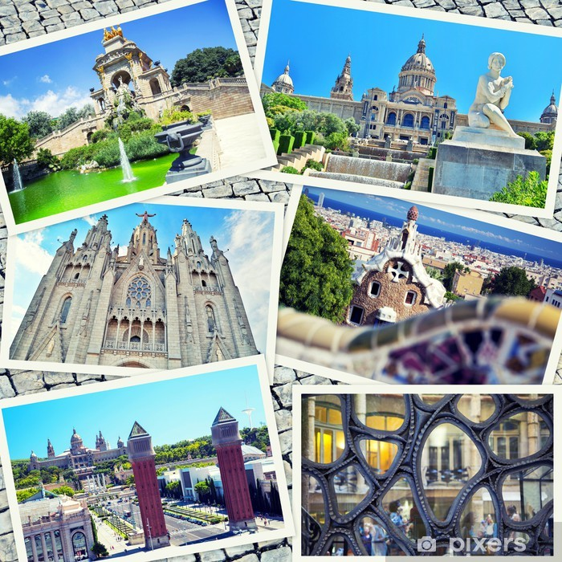

Barcelona
-A cosmopolitan city-

___________________________________________________________________________________
The City
Barcelona is a city on the coast of northeastern Spain. It is the capital and largest city of the autonomous community of Catalonia, as well as the second most populous municipality of Spain. With a population of 1.6 million within city limits, its urban area extends to numerous neighbouring municipalities within the Province of Barcelona and is home to around 4.8 million people, making it the fifth most populous urban area in the European Union after Paris, the Ruhr area, Madrid, and Milan. It is one of the largest metropolises on the Mediterranean Sea, located on the coast between the mouths of the rivers Llobregat and Besòs, and bounded to the west by the Serra de Collserola mountain range, the tallest peak of which is 512 metres (1,680 feet).
The Flag
Barcelona is a major cultural, economic, and financial centre in southwestern Europe, as well as the main biotech hub in Spain. As a leading world city, Barcelona's influence in global socio-economic affairs qualifies it for global city status. Barcelona is a transport hub, with the Port of Barcelona being one of Europe's principal seaports and busiest European passenger port, an international airport, Barcelona–El Prat Airport, which handles over 50 million passengers per year, an extensive motorway network, and a high-speed rail line with a link to France and the rest of Europe.
___________________________________________________________________________________
Attractions
Barcelona was the 20th-most-visited city in the world by international visitors and the fifth most visited city in Europe after London, Paris, Istanbul and Rome, with 5.5 million international visitors in 2011. By 2015, both Prague and Milan had more international visitors. With its Rambles, Barcelona is ranked the most popular city to visit in Spain. Barcelona as internationally renowned a tourist destination, with numerous recreational areas, one of the best beaches in the world, mild and warm climate, historical monuments, including eight UNESCO World Heritage Sites, 519 hotels as of March 2016 including 35 five star hotels, and developed tourist infrastructure. Due to its large influx of tourists each year, Barcelona, like many other tourism capitals, has to deal with pickpockets, with wallets and passports being commonly stolen items. For this reason, most travel guides recommend that visitors take precautions to ensure their possessions' safety, especially inside the metro premises. Despite its moderate pickpocket rate, Barcelona is considered one of the safest cities in terms of health security and personal #afety, mainly because of a sophisticated policing strategy that has dropped crime by 32% in just over three years and has led it to be considered the 15th safest city in the world by Business Insider.
The Barri Gòtic (Catalan for "Gothic Quarter") is the centre of the old city of Barcelona. Many of the buildings date from medieval times, some from as far back as the Roman settlement of Barcelona. Catalan modernista architecture (related to the movement known as Art Nouveau in the rest of Europe) developed between 1885 and 1950 and left an important legacy in Barcelona. Several of these buildings are World Heritage Sites. Especially remarkable is the work of architect Antoni Gaudí, which can be seen throughout the city. His best-known work is the immense but still unfinished church of the Sagrada Família, which has been under construction since 1882 and is still financed by private donations. As of 2015, completion is planned for 2026.
For Live Music check out the cities most popular native music group
Sopa de Cabra - Si et quedes amb mi - 30 anys
For further notice check out these insider tips
Visit Touropia.com!___________________________________________________________________________________